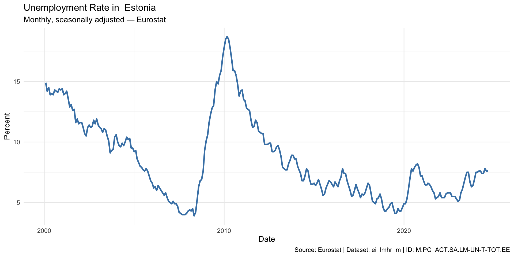
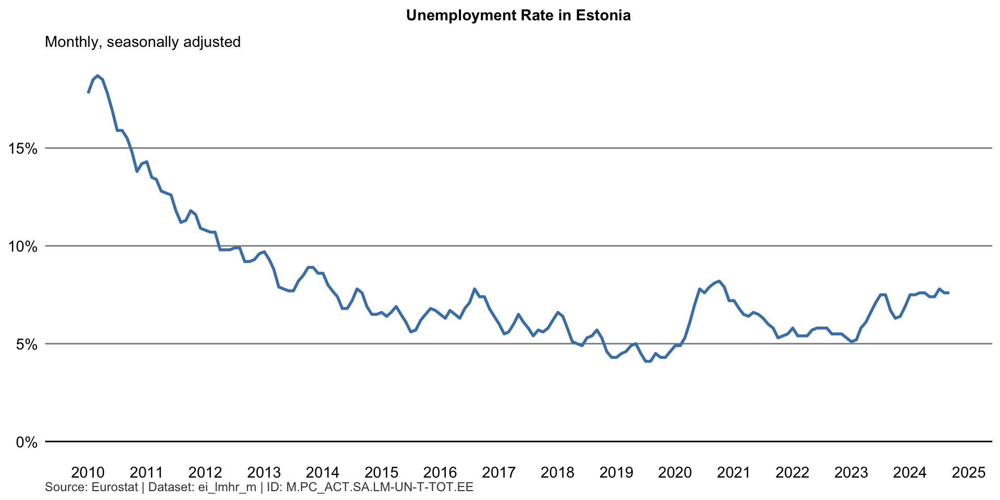
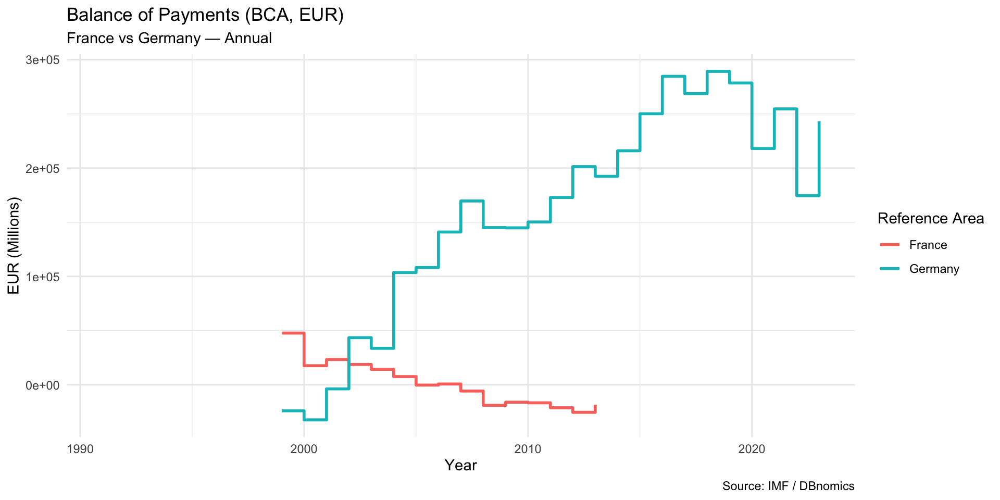
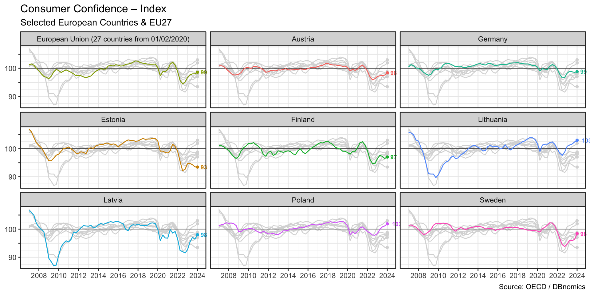

# install.packages("rdbnomics")
library(quarto) # for compiling Quarto presentations and documents
library(rdbnomics) # for compiling Quarto presentations and documents
library(tidyverse) # dplyr, ggplot2, readr, etc.
library(here) # path settings
library(plotly) # for interactive plots
library(countrycode) # for country codesExample 1: Fetch data with R
Nicolas
Eesti Pank
2025-04-17
Setup R
Interfaces to Official Statistics
DBnomics
- DBnomics is a database of databases
- free platform to aggregate publicly-available economic data provided by national and international statistical institutions, but also by researchers and private companies
- Unified interface to access data from many sources
- Harmonized data formats and metadata
- Data series are available upon release by the provider
- Each revision is archived to build a real-time database

Example: Fetch Unemployment Data
- Assume we know exactly the series ID we want to fetch 1
- Unemployment rate, ILO definition, total, Estonia, from Eurostat
Rows: 296
Columns: 22
$ `@frequency` <chr> "monthly", "monthly", "monthly", "mo…
$ dataset_code <chr> "ei_lmhr_m", "ei_lmhr_m", "ei_lmhr_m…
$ dataset_name <chr> "Unemployment rate (%) - monthly dat…
$ freq <chr> "M", "M", "M", "M", "M", "M", "M", "…
$ geo <chr> "EE", "EE", "EE", "EE", "EE", "EE", …
$ `Geopolitical entity (reporting)` <chr> "Estonia", "Estonia", "Estonia", "Es…
$ indexed_at <dttm> 2024-10-31 15:26:51, 2024-10-31 15:…
$ indic <chr> "LM-UN-T-TOT", "LM-UN-T-TOT", "LM-UN…
$ Indicator <chr> "Unemployment according to ILO defin…
$ observations_attributes <chr> "OBS_FLAG,", "OBS_FLAG,", "OBS_FLAG,…
$ original_period <chr> "2000-02", "2000-03", "2000-04", "20…
$ original_value <chr> "14.9", "14.2", "14.5", "13.9", "14"…
$ period <date> 2000-02-01, 2000-03-01, 2000-04-01,…
$ provider_code <chr> "Eurostat", "Eurostat", "Eurostat", …
$ s_adj <chr> "SA", "SA", "SA", "SA", "SA", "SA", …
$ `Seasonal adjustment` <chr> "Seasonally adjusted data, not calen…
$ series_code <chr> "M.PC_ACT.SA.LM-UN-T-TOT.EE", "M.PC_…
$ series_name <chr> "Monthly – Percentage of population …
$ `Time frequency` <chr> "Monthly", "Monthly", "Monthly", "Mo…
$ unit <chr> "PC_ACT", "PC_ACT", "PC_ACT", "PC_AC…
$ `Unit of measure` <chr> "Percentage of population in the lab…
$ value <dbl> 14.9, 14.2, 14.5, 13.9, 14.0, 13.9, …Work with the dataframe
We can direclty work with the dataframe unemp as it is already in a tidy format
[1] "ei_lmhr_m"[1] "Eurostat"[1] "Estonia"[1] "M.PC_ACT.SA.LM-UN-T-TOT.EE"# Plot the data
p1 <- ggplot(unemp, aes(x = period, y = value)) +
geom_line(color = "steelblue", linewidth = 1) +
labs(
title = paste("Unemployment Rate in ", country_name),
subtitle = paste("Monthly, seasonally adjusted —", provider_code),
x = "Date", y = "Percent",
caption = paste("Source:", provider_code, "| Dataset:", source_name, "| ID:", series_id)
) +
theme_minimal()
p1
Interactive plot
When working with dynamic documents, I can also create interactive plots using the plotly package.
But I Need a Plot That Matches Eesti Pank’s Corporate Design
- Use ChatGPT to extract the official color palette and font settings from Eesti Pank’s design templates (e.g., Tööturu_ülevaade_2025.xlsx)
- Define a custom
ggplot2theme that matches the corporate look -theme_ep()
library(ggplot2)
# Color scale
scale_color_ep <- function(...) {
scale_color_manual(
values = c(
"#0079BC", # Accent 1
"#D6E1F2", # Accent 2
"#FF8C42", # Accent 3
"#8ACC61", # Accent 4
"#E85C70", # Accent 5
"#E091D4" # Accent 6
),
...
)
}
# Fill scale
scale_fill_ep <- function(...) {
scale_fill_manual(
values = c(
"#0079BC",
"#D6E1F2",
"#FF8C42",
"#8ACC61",
"#E85C70",
"#E091D4"
),
...
)
}
# Custom ggplot2 theme for Eesti Pank
theme_ep <- function(base_size = 11, base_family = "") {
theme_minimal(base_size = base_size, base_family = base_family) %+replace%
theme(
plot.background = element_rect(fill = "#FFFFFF", color = NA),
panel.background = element_rect(fill = "#FFFFFF", color = NA),
panel.grid.major.x = element_blank(),
panel.grid.major.y = element_line(color = "#858A8C"),
panel.grid.minor = element_blank(),
axis.text = element_text(color = "#000000"),
axis.title = element_text(color = "#000000"),
plot.title = element_text(
face = "bold",
color = "#000000",
margin = margin(b = 10)
),
plot.caption = element_text(size = 9, color = "#444444", hjust = 0),
legend.background = element_rect(fill = "#FFFFFF", color = NA),
legend.key = element_rect(fill = "#FFFFFF", color = NA),
legend.position = "top",
legend.title = element_blank(),
legend.margin = margin(b = 5),
legend.box.margin = margin(t = 5, b = 5)
)
}unemp |>
filter(period >= "2010-01-01") |>
ggplot(aes(x = period, y = value)) +
geom_line(color = "steelblue", linewidth = 1) +
geom_hline(yintercept = 0, color = "#000", linewidth = 0.5) +
scale_x_date(
date_breaks = "1 year",
date_labels = "%Y"
) +
scale_y_continuous(
labels = scales::label_number(suffix = "%"),
name = NULL
) +
labs(
title = paste("Unemployment Rate in", country_name),
subtitle = paste("Monthly, seasonally adjusted"),
x = NULL,
caption = paste(
"Source:",
provider_code,
"| Dataset:",
source_name,
"| ID:",
series_id
)
) +
theme_ep() 
But I Need to Store the data as an Excel File
- Exporting editable figures: Advanced topic!
- Use {officer} + {rvg} to embed editable vector graphics in Excel or use {mschart} to create editable charts for Powerpoint or Word
How do we find the series ID/mask/dimensions?
- Go to the DBnomics website
Fetch two (or more) series at once
- Example: Balance of Payments (BOP) for France and Germany from the IMF for Current Account, Total, Net, Euros, Millions, Annual
⚠You can not specify a dimension without a value!
# by Dimension
dim <- list(
REF_AREA = c("DE", "FR"),
INDICATOR = c("BCA_BP6_EUR"),
FREQ = "A"
)
## Here I do not include FREQUENCY in the dimension list. I would download annual and quarterly data
# dim <- list(
# REF_AREA = c("DE", "FR"),
# INDICATOR = c("BCA_BP6_EUR")
# )
bop <- rdb(provider = "IMF", dataset_code = "BOP", dimensions = dim)
bop %>% count(`Reference Area`) Reference Area n
<char> <int>
1: France 15
2: Germany 26# Line plot with color by country
p2 <- ggplot(bop, aes(x = period, y = value, color = `Reference Area`)) +
geom_step(linewidth = 1) +
labs(
title = "Balance of Payments (BCA, EUR)",
subtitle = "France vs Germany — Annual",
x = "Year",
y = "EUR (Millions)",
caption = "Source: IMF / DBnomics"
) +
theme_minimal()
p2
Wildcarding dimensions
- To fetch all for a dimension (e.g. countries), just remove the value from that position
- Example: remove
"EE"to fetch all countries (REF_AREA)
- Example: remove
- Consumer confidence index from the OECD, downloading data on all countries
⚠️ This can take a while
# cci_ee <- rdb("OECD", "DSD_HHDASH@DF_HHDASH_CTRY", "Q.EST.CCICP.IX")
cci <- rdb("OECD", "DSD_HHDASH@DF_HHDASH_CTRY", "Q..CCICP.IX")
# cci <- rdb("OECD", "DSD_HHDASH@DF_HHDASH_CTRY", "..CCICP.IX") # also wildcard the frequency
unique(cci$REF_AREA) [1] "AUS" "AUT" "BEL" "CHE" "CHL" "COL"
[7] "CRI" "CZE" "DEU" "DNK" "EA" "ESP"
[13] "EST" "EU27_2020" "FIN" "FRA" "G7" "GBR"
[19] "GRC" "HUN" "IRL" "ISR" "ITA" "JPN"
[25] "KOR" "LTU" "LUX" "LVA" "MEX" "NLD"
[31] "NZL" "OECD" "POL" "PRT" "SVK" "SVN"
[37] "SWE" "TUR" "USA" cci_eu <- cci %>%
filter(
REF_AREA %in% c("EU27_2020", "AUT", "EST", "FIN", "DEU", "LVA", "LTU", "POL", "SWE")) |>
mutate(
REF_AREA = case_when(
REF_AREA == "EU27_2020" ~ "EU27",
TRUE ~ countrycode(REF_AREA, origin = "iso3c", destination = "iso2c")
)
)
unique(cci_eu$`Reference area`)[1] "Austria"
[2] "Germany"
[3] "Estonia"
[4] "European Union (27 countries from 01/02/2020)"
[5] "Finland"
[6] "Lithuania"
[7] "Latvia"
[8] "Poland"
[9] "Sweden" [1] "Austria"
[2] "Germany"
[3] "Estonia"
[4] "European Union (27 countries from 01/02/2020)"
[5] "Finland"
[6] "Lithuania"
[7] "Latvia"
[8] "Poland"
[9] "Sweden" 